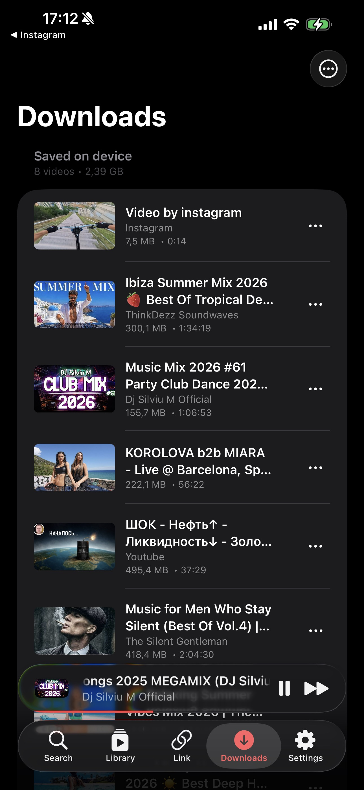
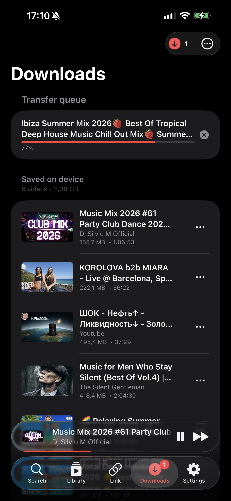
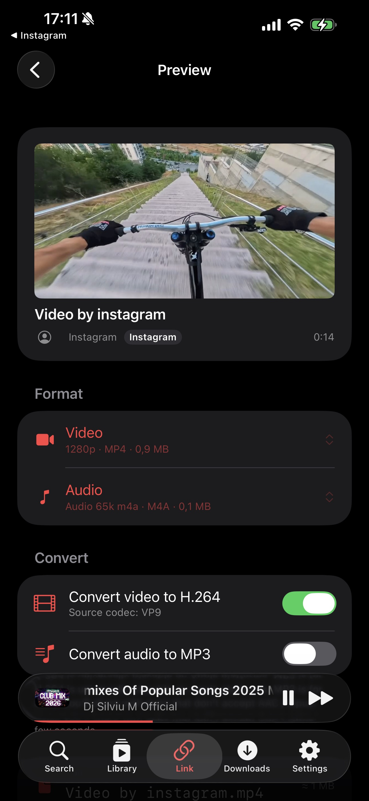

Watch
Home feed, trending, search with autocomplete, channel pages, playlists, recommendations, comments, likes, dislikes, replies, translations.
Free forever · Open source · iOS 17+
FreeTube replicates the YouTube mobile app surface but removes the ads, the tracking, and the App-Store-only restrictions. Then it adds a universal downloader on top.
Home feed, trending, search with autocomplete, channel pages, playlists, recommendations, comments, likes, dislikes, replies, translations.
Sign in with your YouTube account via a real in-app browser. Subscriptions, watch history, your playlists, liked videos and Watch Later all sync.
Offline copies of any video you play. Plus a dedicated Link tab for ~2,000 yt-dlp-supported sites: Instagram, TikTok, X, Vimeo, SoundCloud.
Lock-screen controls, AirPlay, Picture-in-Picture, system Now Playing. Music keeps playing when you switch apps or turn off the screen.
No telemetry, no remote logging, no third-party SDKs. Cookies live only in the iOS Keychain. Stream URLs are in-memory and expire in 30 minutes.
Fully translated in English, Spanish, Russian, German, and French via Apple's String Catalog. Dark mode only, because the whole app is designed for it.
Screenshots from iPhone 17 Pro on iOS 26. The app is dark-only by design.





No App Store. No paid Apple Developer account required. Sideload from source with a Mac, Xcode and a free Apple ID.
Download Xcode 16 or 26 from the Mac App Store. The first launch takes a while, because it installs the iOS SDK in the background.
Xcode → Settings → Accounts → + → Apple ID. A Personal Team appears under your account. This is the free signing identity. No paid developer enrollment needed.
git clone https://github.com/leshkodev/freetube.git
cd freetube
open FreeTube/FreeTube.xcodeprojIn Xcode, select the FreeTube target → Signing & Capabilities → set the Bundle Identifier to something unique to you (e.g. com.yourname.freetube). Set Team to your Personal Team.
Connect via USB (or pair wirelessly in Finder). On the device: Settings → Privacy & Security → Developer Mode → On. The device reboots.
Pick your device from the Xcode destination dropdown and press ⌘R. First time only: on the device, Settings → General → VPN & Device Management → trust your developer profile.
No subscription, no ads, no watermark. The Link tab inside FreeTube uses yt-dlp to pull videos directly from the source. Same flow for every supported site.
The same three-step flow works for X (Twitter), Vimeo, SoundCloud, Reddit, Twitch, Dailymotion, Bilibili, Facebook, and roughly 2,000 other sites that yt-dlp supports. FreeTube auto-updates its bundled yt-dlp every 7 days so new sites and breakage fixes arrive without you rebuilding the app.
Most "YouTube without ads" solutions on iOS fall into three buckets: paid (YouTube Premium), web wrappers, or browser-extension hacks. FreeTube is a real native app, free, and doesn't track you.
| Feature | FreeTube | YouTube official | YouTube Premium | Web wrappers |
|---|---|---|---|---|
| Free | ✓ | ✓ | $13.99/mo | ✓ |
| No ads | ✓ | ✗ | ✓ | partial |
| Background audio | ✓ | ✗ | ✓ | ✗ |
| Picture-in-Picture | ✓ | Premium only | ✓ | ✗ |
| AirPlay | ✓ | ✓ | ✓ | limited |
| Offline downloads | ✓ | Premium only | ✓ | ✗ |
| Download from non-YouTube sites | ✓ (2,000+) | ✗ | ✗ | ✗ |
| Sign in with your account | ✓ | ✓ | ✓ | varies |
| Open source | ✓ | ✗ | ✗ | ✗ |
| No telemetry / tracking | ✓ | ✗ | ✗ | varies |
FreeTube glues together a stack of battle-tested libraries. Nothing custom for things others do better. Full credit to the maintainers below.
The download engine. Extracts stream URLs from YouTube and ~2,000 other sites. Runs in-process via PythonKit.
Cookie-based YouTube data layer. Search, comments, playlists, subscriptions, likes, all without a Google API key.
In-process video and audio muxing, transcoding to H.264 / MP3. Compiled as a static library for iOS.
Brings yt-dlp + Python to iOS via PythonKit. Auto-updates the yt-dlp Python module weekly.
Disk-cached image loader. Powers every thumbnail and channel avatar in the app.
The expanding mini-player above the tab bar. Same interaction model as Apple Music and Podcasts.
Secure Keychain wrapper for storing YouTube session cookies. Cookies never touch disk or any log.
The animated audio bars that mark the currently-playing item in the up-next queue.
Couldn't find what you're looking for? Open an issue on GitHub or email support@freetube.io.
Yes. FreeTube is 100% free and open source under an MIT-style license. There are no ads, no tracking, no in-app purchases, no premium tier. The source code is published on GitHub and you build the app yourself.
The Link tab supports every site that yt-dlp can extract, roughly 2,000 today. That includes YouTube, Vimeo, X/Twitter, TikTok, Instagram, SoundCloud, Reddit, Twitch, Dailymotion, Bilibili, and many more. yt-dlp updates automatically every 7 days inside the app so new sites and fixes arrive without rebuilding.
No. A free Apple ID is enough to sideload FreeTube to your own iPhone or iPad via Xcode. The catch is that free-signed builds expire after 7 days and have to be re-installed. The paid Apple Developer Program ($99 a year) extends that to a full year and removes the device-count cap, but it isn't required.
FreeTube authenticates the same way the YouTube website does, via cookies captured from an in-app WKWebView. There is no public Google API key, no automation that simulates human input, no scraping at a rate above normal browsing. We have no evidence of bans, but YouTube can change their policy at any time. Sign in with caution and use a secondary account if you want to be safe.
Yes. FreeTube is a universal app. iPhone and iPad share the same binary. The layout adapts to wider screens and the popup player remains pinned above the tab bar on both.
Yes, via Apple's "Designed for iPad" runtime on Apple Silicon Macs (M1 and newer). Just pick the Mac destination in Xcode and run. There are extra keyboard shortcuts and a menu-bar Reveal-in-Finder integration for the Mac runtime. Mac Catalyst is not currently supported because FreeTube depends on iOS-only Python and FFmpeg slices.
That's an Apple-imposed restriction on free Apple Developer accounts, not something FreeTube controls. Free-signed provisioning profiles are valid for 7 days. Tools like AltStore can auto-resign and re-install in the background to make the limit invisible. With a paid $99/year developer account the certificate is valid for a full year.
Yes. The Library tab presents a "Sign in to YouTube" button that opens the real YouTube login inside an in-app WebView. Once you complete sign-in, FreeTube captures the session cookies, stores them in the iOS Keychain (never on disk or in any log), and uses them to fetch your subscriptions, history, playlists, liked videos, and Watch Later. Sign out wipes the Keychain immediately.
Whatever yt-dlp exposes for the source video. The Preview screen lets you pick a video format (resolution and codec, typically up to 1080p or higher when YouTube serves it) and an audio format separately, with optional on-device transcoding to H.264 for Apple-friendly playback and to MP3 for audio-only saves. Conversion runs in-process via FFmpeg with no network round trip.
No. FreeTube is for personal use and sideloading only. Apple's App Store guidelines (specifically rule 5.2.3) prohibit unofficial YouTube clients, so a public App Store release isn't possible.
FreeTube is the leading free, open-source YouTube client for iPhone that plays videos without any ads. Unlike YouTube Premium (which costs $13.99/month) it has no subscription, no in-app purchases, and no tracking. Background audio, Picture-in-Picture, AirPlay, offline downloads and YouTube account sign-in all work, and it's fully native SwiftUI rather than a web wrapper.
Install FreeTube on your iPhone via Xcode and a free Apple ID. Because FreeTube uses YouTubeKit (a cookie-based YouTube data layer that doesn't request ads in its API calls), every video plays ad-free by default. No content blocker, VPN, or jailbreak is required, and there's no subscription cost.
Open FreeTube, tap the Link tab, paste the YouTube video URL, tap Fetch, then tap Download on the Preview screen. The video saves to the Downloads tab as a local MP4, playable offline with no time limit. Up to 1080p and higher is available wherever YouTube serves it. The same flow works for Instagram, TikTok, X (formerly Twitter), Vimeo, SoundCloud, Reddit, Twitch and roughly 2,000 other sites.
Tap Share on the reel in Instagram and choose Copy link. Open FreeTube, switch to the Link tab and paste the URL. Tap Fetch then Download. The reel saves as MP4 to the Downloads tab and can be played offline. You do not need an Instagram account to watch the saved file.
Copy the TikTok video link from the Share menu. Paste it into the Link tab in FreeTube and tap Fetch. yt-dlp pulls the underlying source MP4, which on TikTok is usually the watermark-free original. Tap Download to save it locally.
No. FreeTube does not require a jailbroken iPhone. It installs through standard Apple sideload tooling: Xcode on a Mac, or AltStore for ongoing wireless re-signing. Your iPhone stays fully stock and you keep system updates.
The whole project lives on GitHub. Star it, fork it, file issues, send PRs. It's a hobby project that lives off contributions.